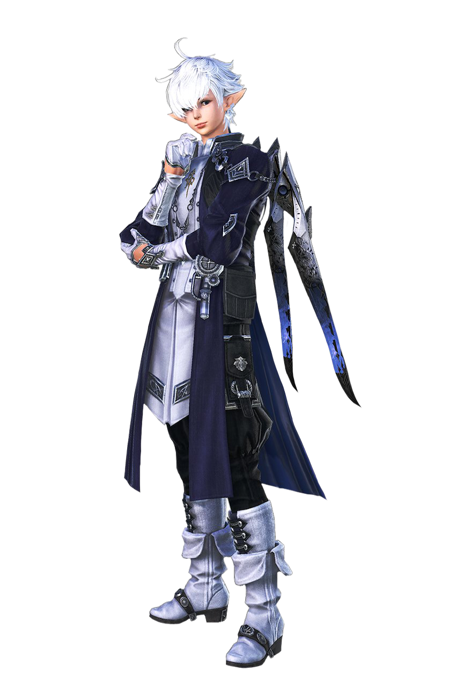
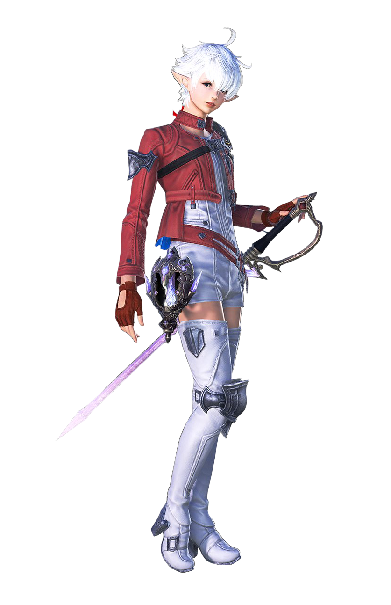
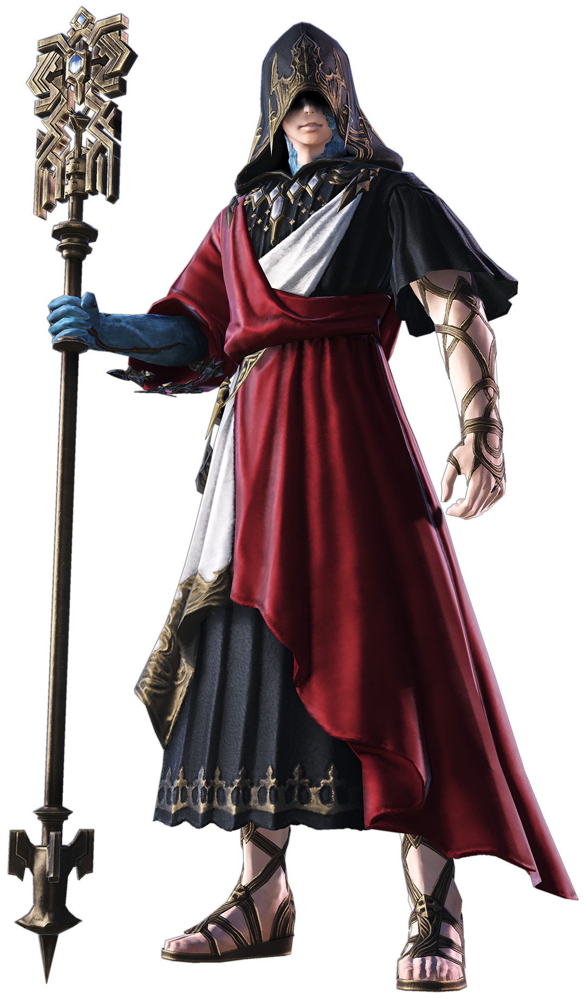
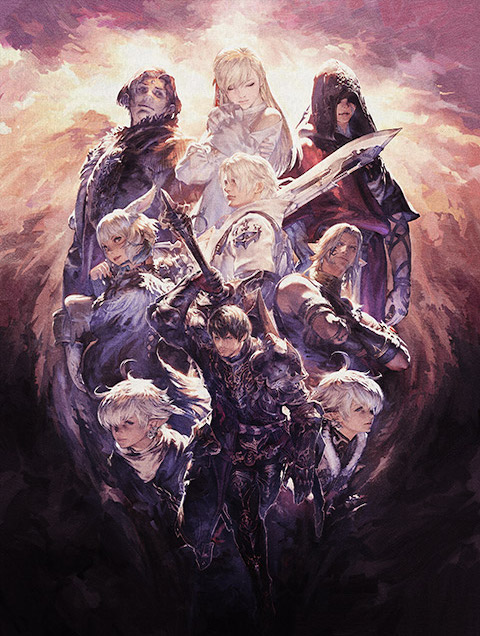
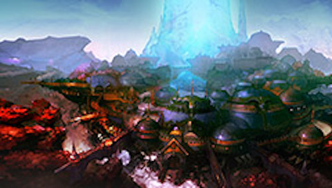

Meet Your Friends at EORZEA...

Alphinaud Leveilleur
アルフィノ・ルヴェユール
"Minfilia has told us what Shadowless is up to.
Eorzea remains in a state of crisis. It's up to us to save Eorzea from these threats."
--Alphinaud Leveilleur
Alphinaud Leveilleur, the young master of the prestigious Leveilleur
family, is a genius who was allowed to enroll in the Sarean University
of Magic along with his twin sister, Alise, at the young age of eleven.
He went on to earn a Bachelor's Degree in a number of fields,
including Magick and Etherology. After graduation, with the opportunity
to become an adult at the age of 16, he crossed the sea to Eorzea despite
his father's objections. All of this was to carry on the legacy of his grandfather,
Luisova. He joined the Scions of the Seventh Dawn. However, during his journey
with the Warriors of Light in the Dragon Poetry War, he gained experience
in meeting a wide variety of people, and he grew to be able to stand on his own.

Alisaie Leveilleur
アリゼー・ルヴェユール
"Grandfather, there's no way he'd entrust his
future to guys like that!
Nor could he have left the organization to them!"
--Alisaie Leveilleur
A young girl affiliated with the Scions of the Seventh Dawn.
Although she and her twin brother Alphinaud are equallyknown as prodigies,
the two are completely opposite. The older brother
always likes to give long speeches and also likes to study politics.
Her sister, however, is very outspoken and will work hard to train
herself to save as many people as possible, even if she gets hurt doing so.
After being summoned to the First World by the Crystal Exarch, Alisaie decided to start investigating the source of
the flood of light.

Crystal Exarch
水晶公
"......haven't heard of the name yet.
What happened to people with that name?"
--Crystal Exarch
"In the timeline where the Eighth Spiritual
Calamity occurred, when the Crystal Tower was reopened by Sid and the
others, a part of Gu-Raha had merged with it, extending his life as
its guardian. He saw the occurrence of the Eighth Spiritual Plague,
in which the Warriors of Light and Dawn and others died, and the
unending catastrophe that followed. According to the plan proposed
by Sid, Guru Raha sent himself and the Crystal Tower to the First
World after the Flood of Light in order to stop the source of
the Eighth Spiritual Plague, the Flood of Light, and, as the
"Crystal Exarch," built the Crystal Capital around the Crystal
Tower as a shelter for the people and a base of resistance.
As the "Crystal Lord", he built the Crystalium around the
Crystal Tower as a shelter for the people and a base of resistance."
Background
Ala Mhigo is at last free from imperial rule, but that liberty may
prove fleeting as the Empire moves to both reclaim this bloodied
nation and subjugate all of Eorzea.In their hour of need, however,
they cannot turn to the Warrior of Light. Nor to the Scions, who
yet slumber, their souls adrift.
The realm is left to struggle without its saviors. Here
a new adventure begins in a world where light ushers all unto
oblivion. But hope is not yet lost, for where there is light there is shadow.
The Crystal Exarch is the highesr leader, simtaneously the founder,
to the Crystal City's autonomous organization, the Settlement, and
leads the city's residents in their ongoing struggle. The title
Crystal Exarch comes from the Crystal Tower and his crystallized body.

New Maps
The Flood of Light rendered the vast majority of the First devoid
of life, with Norvrandt remaining as the last bastion. Being a
reflection of the Source, its climates and environs resemble
those of Eorzea, though the cultures of its diverse range of
inhabitants have taken an entirely different course over its troubled history.

License | Rules & Policies | Privacy Policy | Cookie Policy
©2023 Sony Interactive Entertainment LLC."PlayStation Family Mark", "PlayStation", "PS5 logo", "PS5", "PS4 logo" and "PS4" are registered trademarks or trademarks of Sony Interactive Entertainment Inc.
ESRB and the ESRB rating icon are registered trademarks of the Entertainment Software Association.
MAC is a trademark of Apple Inc., registered in the U.S. and other countries.
Windows is either a registered trademark or trademark of Microsoft Corporation in the United States and/or other countries.
All other trademarks are property of their respective owners.
©2023 Valve Corporation. Steam and the Steam logo are trademarks and/or registered trademarks of Valve Corporation in the U.S. and/or other countries.
© SQUARE ENIX
Square Enix, Inc., 999 N. Pacific Coast Highway, El Segundo, California 90245
FINAL FANTASY, FINAL FANTASY XIV, FFXIV, SQUARE ENIX, and the SQUARE ENIX logo are registered trademarks or trademarks of Square Enix Holdings Co., Ltd.
SHADOWBRINGERS is a registered trademark or trademark of Square Enix Co., Ltd.
LOGO ILLUSTRATION: © 2010, 2014, 2016, 2018, 2021 YOSHITAKA AMANO